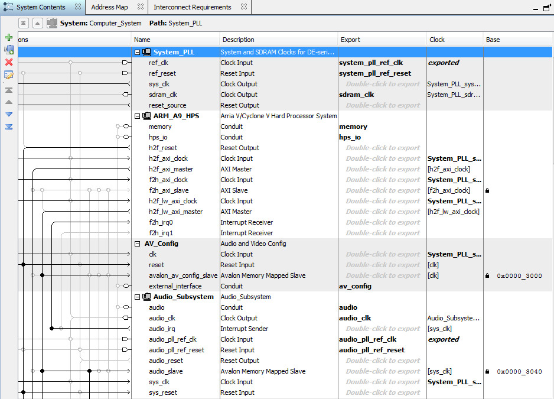
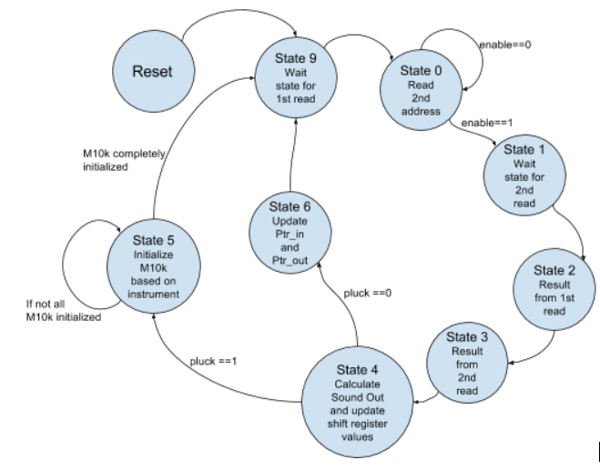
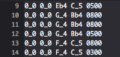
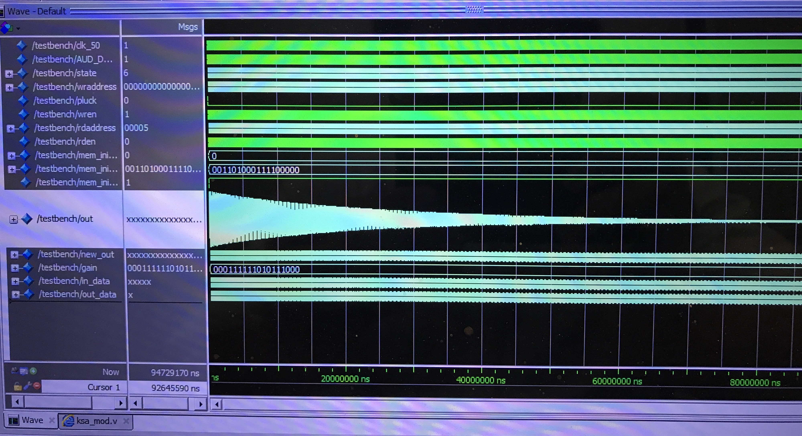
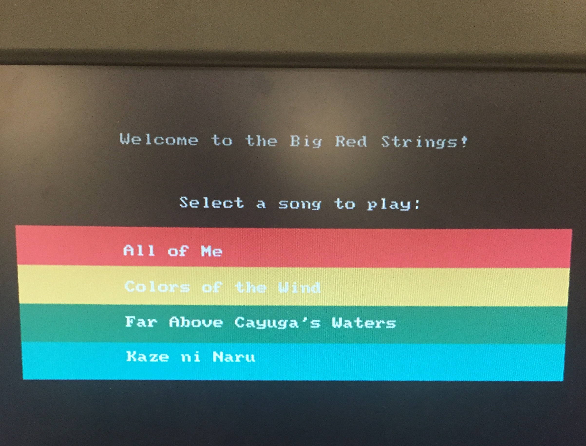

Big Red Strings: A FPGA Musical Trio
Erissa Irani, Albert Xu, and Sophia Yan
Erissa Irani, Albert Xu, and Sophia Yan
The objective of this project is to implement a musical jukebox on the DE1-SoC. The design made use of both the FPGA and ARM processor. Using the Karplus-Strong algorithm, a number of strings corresponding to three instruments total were synthesized on the FPGA to produce different notes. A C program running on the HPS was responsible for handling file input from a folder containing transcribed sheet music as well as controlling tempo. It also produced a GUI on a VGA display that enables a user to select a preloaded song to play. This system allows music to be read by the HPS and FPGA and synthesize a sound akin to that of a real instrument.
The core of the design are the hardware strings from the Karplus-Strong method, outlined in Figure 1 (above). Each string essentially consists of a delay line looped into a low pass filter. Each delay line is modeled using a M10k memory block. To write and read elements from the delay line, two incrementing pointers are used to traverse the length of the line. Each element is read, passed through the filter, and written back to memory. When a string is plucked, the delay line is populated with an initial condition. White noise, a sawtooth wave, and a triangle wave may be selected as input conditions, each of which produced a unique sound quality. The decay rate of a note is contingent on the gain for the filter. In the design, the gain is constant regardless of note length and is optimal for durations of one second or shorter. A low pass filter is used to decay higher harmonics quickly while allowing lower frequencies to propagate longer. This models the physical phenomenon of higher harmonics decaying more quickly than lower ones.
The audio clock was set to 48 KHz, meaning each string had to generate an audio sample per cycle. The internal state machine was set to a 50MHz clock, so each string would be idle while waiting for the next rising edge of the audio clock to release its sample. Multiple strings were synthesized on the FPGA, enabling several notes and chords to be played together. To avoid overflow, chords are divided by a constant factor to reduce their amplitude before superimposing multiple notes together.
On the software side, the ARM processor was responsible for running the music coprocessor by controlling the pitch and duration of notes being played. Upon reading a note from the input music file, the HPS would pass a value to the FPGA indicating the length of the shift register to be used, specifying which note should be played. The HPS then sends a pluck signal and waits for the duration of the note, specified in the music file in milliseconds. The next note is selected and plucked after the first note is over. In the current design, up to a three instrument trio is supported. Each instrument contains four strings, and reads from its own input file. The music input accepts notes corresponding to scientific pitch notation ranging from G2 to C#6, 98Hz and 1109Hz respectively.
The user interfaces with the jukebox via a mouse and VGA display. Upon startup of the program, the monitor displays all available songs in the music library. After selecting a song, the user is then prompted to specify which instruments should be used. Each instrument receives a different initial condition upon a pluck signal. Once the instrumentation is selected, the user can select a play button to begin synthesis of the song. The VGA display returns to the initial song selection screen after the song is complete.
The parallelizable portion of the project was developed in RTL on the FPGA. The original goal was to synthesize as many strings to run concurrently as possible, and this could be maximized by generating more modules in hardware. It turned out the limiting factor to using more strings was actually arranging the music, as every string had to be written individually. Although the hardware to support many more strings existed on the FPGA, the provided examples only use up to 12 strings because of this. Processing the music via file input had to be handled on the HPS side, and it was significantly easier to handle timing and plucks in software and communicate them to the FPGA. The GUI was handled by the HPS for the same reason.
The main hardware components of this project included the DE1-SoC board, an external mouse connected to the board via USB, speakers connected to the aux out port of the board, and a monitor for displaying the project’s GUI interface. Most of the work done with the project’s hardware components involved modifying the system’s Qsys file, particularly the Computer System Qsys document. The changes made to this document for the final product are reflected in Figures 3-6:
As shown in the above figures, the first modification made was initializing the ARM_A9_HPS module, which allowed for the HPS to use the verilog code as a subprocessor. In order to take advantage of the DE1-SoC’s audio capabilities, the audio and video configuration and audio subsystem modules were initialized. The main communication line between the HPS and DE1-SoC was the external bus to avalon bridge (EBAB), which was instantiated appropriately in Qsys. In order to be able to draw the buttons and text for the GUI interface, the VGA subsystem, DMA’s Front and Back Address translator, SDRAM controller, and On-Chip SRAM were instantiated into Qsys. 10 total parallel I/O ports were instantiated for this project. One of these ports, called ‘instruments’, was a 9 bit port responsible for indicating what 3 instruments (between 3 choices for each one, which will be elaborated on in the software section) were chosen by the user via button clicks on the GUI interface. 3 PIO ports were then designated for each of the three instruments: a 32 bit port called pluck_portn (n=instrument number, range 1-3), which enables the wave synthesis of a note in the verilog code and two 20 bit ports called str12_n and str34_n, which represent 4 10-bit representations of the shift register lengths corresponding to different notes (first and second notes on first PIO port, third and fourth on second one) for each pluck.
The Verilog synthesis the sound by using the Karplus-Strong method and outputs the music to the stereo speakers. A state machine is used to write the final audio out to a stereo audio FIFO. The first instrument is played on the left channel, the second instrument on the right channel, and the third instrument is played across both channel. Another state machine is used to synthesize the sound of each note and stringed instrument.
The Sound Synthesis state machine takes generates a sound based on what a given note frequency, instrument, and pluck. The state machine uses M10k blocks as the shift registers for one string. Each block can hold 20bit x 512 addresses. Which means it can hold 512 shift registers per string. The number of shift registers is based on the formula 48000/note frequency = shift registers. Therefore, the lowest note that can be played is G2 at 98Hz because 48000Hz/98Hz = 489.8 shift registers. The next lower note is F#2 at 92.5Hz, which translates to 519 shift registers. 519 shift registers is longer than the M10k block, therefore, F#2 can not be synthesized by the Sound Synthesis state machine. The highest note that can be played is 48000Hz, which is above the range of human hearing. Each string will have a different initial wave drive based on the instrument. Three different wave drives, a triangle wave, random white noise, and sawtooth wave are implemented to synthesize three different plucked instruments. The random white noise produced a steel string sound and the triangle wave produced an acoustic sound. The sawtooth wave produced something in between. Pluck will pluck the string with the given note.
On reset, the pointer to the shift registers, write/read addresses, and last pluck value. The next state is state 9, which is a wait state for the first read address from the M10k ‘shift register’. Then, state 0 is entered where the read address is updated to the next shift register when an enable signal is received from the HPS and the next state is updated to state 1. If an enable signal is not received, state 0 will stay in state 0. State 1 is a wait state to read the second address and next state is state 1. The output of the first address is returned in state 2 and saved to out_data. The next state is updated to state 3. The data from the second address is returned in state 3 and saved to in_data. The next state is updated to state 4. In state 4, the sound out is computed based on the Karplus-Strong method. If a pluck occurs, the next state is state 5 where the memory block is initialized with pluck values. The state machine stays in state 5 until the whole M10k block is initialized with a wave drive. The wave drive of the pluck determines the type of instruments that is played. Then, the next state is state 9 and the state machine repeats. Once the M10k block is initialized, state 4 will compute the sound out by averaging two shift registers and low pass filter the result. Once pluck is released, the sound out will be the average of the two shift registers(out_data and in_data) and decay over time. When there is no pluck, the next state will be update to state 6. State 6 updates the pointers to the two shift registers in the M10k block and resets it if the pointer value reaches the end of the string for the respective note. Each note is translated to a set number of shift registers. After updating the pointers in state 6, the next state is state 9, where the state machine repeats. The state machine is illustrated in Figure 7:
The audio state machine starts when reset occurs. On reset, the audio state machine resets the timer, enable signal, bus_read, bus_write, and sets state to 0. State 0 gets the audio_fifo_address and sets bus read to high to reads the FIFIO available space and goes to state 1. The FSM stays in state 1 until bus_ack is high. Once bus_ack is high, the update state to 2, read the FIFO available space, and set calc_enable low to prevent the sound from updating. In state 2, reset state to 0 if there is no space in the FIFO to try again later. If there is room in the space, update state to 3 and write final_out to the left channel. In state 3, check the bus ack for left channel write. Once ack is received, update state to 4 and set bus_write low. In state 4, write final_out2 to the right channel and update state to 5. State 5 waits for the bus ack for right channel write. Once the ack is received, state 5 update state to 0, sets bus_write to 0, and sets calc_enable high to calculate sound for the next timestep. The state machine then repeats from state 0.

The HPS code for this project had two main purposes: a) served as the “fingers” playing the instruments, communicating to the DE1-SoC the notes to play and how long to play them for, and b) ran the GUI interface, which allowed the user to pick what song to play and what combination of up to three instruments to use to play it. All code handled via the HPS was written in C. The first portion, which involved sequencing the notes to play for each song, was done in string_synth.c. To begin, pointers were established for storing the base address of the lightweight bus. Constants were then defined to represent the addresses of the three pluck port PIOs and six string ports on the DE1-SoC board. Unsigned int pointers representing the values assigned to these addresses were also instantiated, and memory was allocated appropriately.
Before writing more code, formatting for a custom score sheet for each instrument in a song was established. This format was as follows:
In this format, the notes played on each of the four strings of an instrument are specified, followed by the time (in microseconds) to wait in between the current pluck and the next pluck in the sequence (which was always a length of 4, including leading zeros for numbers less than 1000). Note notation had three components: 1) a letter (A-G), 2) either a _ (representing a natural note), # (representing sharps), or b (representing flats), and 3) a number between 2 and 6, representing the octave that the note was played in. The only exception to this was the use of ‘0_0’, which was used to notify the Verilog subprocessor to not play a note on that string. Typically, a middle C on a piano is considered as a C4. The timing of each note depended on the speed of the song, at the discretion of the lab member that coded the song. Scores were written in a .txt format. For each song, three text files total were written; one corresponded to notes for the harmony part, one corresponded to the notes for the melody portion, and the final one either played the melody notes as well or served as an accompaniment to the other two files. An example of the custom score format can be found in Figure 9, which is a small excerpt of the score for the melody portion of “All of Me”:
In order to translate these note notations into frequencies, a helper function called note_to_frequency() was written. Its only input was a char of length 3 representing the note to translate, and its output, the corresponding frequency, was of type double. The purpose of it was to act as a lookup table, which was done by examining the three components mentioned above and translating the note notation to the appropriate frequency value, as outlined in Figure 10:
Specifically for the songs written with custom scores for final demoing purposes, the range of notes encoded in this function went from G2 (frequency= ~98.0 Hz) to C#6 (frequency= ~1109.0 Hz). As mentioned earlier, notes with a ‘0_0’ notation meant setting this frequency value to 0.0 so that no note is played.
To help organize the contents of files once they are read in, a custom structure called Data was written, which contained the following attributes: *file, which was a FILE object pointer containing the contents of the .txt file being read, *ptr1, representing the shift register lengths for the first two strings, *ptr2, representing the shift register lengths of the last two strings, and *pluck_ptr, which represented which of the four strings (if any) should be plucked at that moment. In main(), three Data structures were instantiated for each of the files, and each respective *ptr1, *ptr2, and *pluck_ptr were assigned to the matching pointers with the addresses of the PIO ports. All three files (which were input arguments when compiling and running string_synth.c) were read in using fopen() and assigned to their respective Data structures as the attribute *file. In order to read three files concurrently, three separate pthreads were created and run at the same time using the function pthread_join(). When created, each thread ran the second helper function associated with this module, called file_parse(), which was what parsed each line of the .txt files and sent data about the notes and plucks of the three instruments to the PIO ports. The Data structure for a particular instrument served as the inputs to this function (called three times, for each of the three instruments' Data structures).
Within file_parse(), each attribute of the input Data structure was extracted and stored in local variables. After several other local variables were instantiated, a while loop parsing each line of the file was entered; termination occured when there were no more lines in the file to read. For each line, all four notes plus the time to hold the notes were extracted. The time to wait was converted to an int, and the four notes were converted to frequencies using the helper function note_to_frequency(). For each of the four resulting frequencies, if-statements were used to check if these values were above 0.0 (meaning a note was being played and that the string should be plucked). If so, the shift register length value corresponding to that note’s frequency was calculated (using the formula 48000 kHz/freq) and written to its appropriate PIO port. The pluck port bits corresponding to each of the plucked strings were also set high. If the returned frequency was equal to 0.0 (meaning a note should not be played), the length value was set to 0 (to avoid a division by 0 error). Once these values were all written to the PIO ports, usleep() was called for 10,000 microseconds to hold the plucks of the instrument's four strings value out long enough that the DE1-SoC could read that value and use the information correctly. The pluck port was reset to 0 after this point, and usleep() was once again called, but the duration was the converted integer time value from the .txt file multiplied by 1000 (to convert milliseconds to microseconds). This was done to simulate holding out notes/plucks for the given time period (to represent quarter notes, eighth notes, etc.). Once the while loop is exited, the Data structure was freed from memory.
Once all three files were done being parsed, each of the three files were closed, and file structures were also freed from memory to signal the end of the function.
The second portion of the HPS code ran a GUI interface with buttons for the user to push with the externally connected mouse. Once appropriate buses and address pointers were instantiated, several char arrays with text representing the headers of each screen in the GUI interface were instantiated. The address of the PIO port representing the three instrument types chosen by the user was also declared as a constant, and an appropriately named pointer was instantiated. Several helper functions were written to write/clear text and draw shapes onto the VGA monitor display, such as VGA_text(), VGA_text_clear(), and VGA_box(). Others were written to separate each screen of the GUI into different helper functions; one represented drawing the main screen that displayed all the song options (called draw_main_screen()), three of them were for the three instrument selection menus (called draw_instr1(), draw_instr2(), and draw_instr3()), and the final one instructed the user to push a play button to start the chosen song (called draw_play()). These functions were responsible for drawing text and boxes at given coordinates and with specified colors. Within main(), once the mouse was set up, button click detection was implemented by checking for clicks within drawn box boundaries. On the main screen, choosing either of the four rectangular buttons (representing each of the four songs coded for this project) not only transitioned the monitor to the instrument choosing screens but also stored a char representing a compiled command to string_synth.c (with the appropriate file names specified, depending on the song choice). Within each of the three instrument choice screens, the local variable eventually written to the instruments PIO port pointer was updated accordingly after detecting valid button clicks. The final screen, displaying a single play button, ran a call to system() (with input being the command stored after the home/song choice screen) when a valid mouse click on the button was detected. Once the song was finished, the user was returned to the home screen to be able to choose another song to play.
Early stages of the Verilog wave synthesis state machine were tested in Modelsim. Figure 11 displays an example of a synthesized decaying wave via this state machine, which simulates an instrument driven by a triangular wave:
Figures 12-16 demonstrate the flow of the HPS-controlled GUI interface. They show how the user starts with the main song selection menu, goes through three instrument selections (choosing between the random white noise, sawtooth wave, or triangular wave driven instrument sounds), and eventually reaches a play button menu, prompting the user to push it when ready to hear the song:
Below are full audio recordings of the four songs coded with custom scores for this project. Note that "All of Me" was played with only two diffrent instruments (to show the capability of playing with less than three, if desired), while the others use all three instruments (where the third instrument also plays the melody).
IMPORTANT NOTE : These recordings are best enjoyed with headphones to distinguish the different instrument sounds. Note that "All of Me" is best enjoyed at around half volume or less, while the other three are best at full (or close to full) volume
"All of Me" (by John Legend):
"Colors of the Wind" (from the Disney movie Pocahontas):
"Far Above Cayuga's Waters" (Alma Mater of Cornell University):
"Kaze ni Naru" (from the Hayao Miyazaki film The Cat Returns):
The project achieved the goal of implementing a musical jukebox on the DE1-SoC. The final project synthesized 3 instruments with 4 strings and had a GUI on a VGA display that allows a user to select a song and what instruments to play the song with. Custom scores were made for each song. The scores were adjusted to account for the discrepancy in threading between the different instruments. For the demo, a total of 33 different combination of songs and instruments could be chosen. The Karplus-Strong algorithm worked well on the first try and the group did not feel the need to implement a tuning parameter to fine tune the note frequencies. The sounds produced were better than expected and ranged from a steel string instrument to an acoustic instrument. The instruments also sounded different depending on the range the notes fell in. Each instrument could play up to 4 strings at once to synthesize cords.
The project could be further expanded by adding more instruments and more music scores. A way to add more plucked instruments in the future would be to implement drive waves of other shapes such as a square wave and sine wave. Another possible future implementation would be to expand the instruments to include bowed string instruments in addition the plucked string instruments. Some code could be written to take in standard music sheets for a different instruments and convert it to a score format that our current hps/fpga can parse. Being able to read standard music sheets would increase the number of songs that could be played.
There were no applicable standards for the project outside of hardware/software constraints.
Overall, the group had a lot of fun implementing the project and getting a crash course in music theory.
Intellectual Property ConsiderationsAll code referenced were code in the public domain, the largest reference used was Bruce Land’s audio projects. Bruce Land’s audio FIFO audio state machine was reused to output our sound to the stereo FIFO. The sound synthesis state machine was built while referencing Bruce Land’s Karplus-Strong matlab and verilog code.
The custom music scores referenced music sheets from MuseScore, which have an online community where musicians can share publicly sheet music they created.
Legal ConsiderationsTo expand the Jukebox or market it would most likely require buying copyrights to put more songs on the Jukebox.
Erissa Irani: Helped write and debug all Verilog code. Wrote and debugged all HPS code. Wrote scores for "All of Me" and "Far Above Cayuga's Waters". Wrote hardware, HPS (software), and results sections of this website. Created, designed, and formatted this website.
Sophia Yan: Helped write and debug all Verilog code. Wrote scores for "Kaze ni Naru". Wrote Verilog (software) and conclusion sections of this website.
Albert Xu: Helped write and debug all Verilog code. Wrote scores for "Colors of the Wind". Wrote Introduction and High Level Design sections of this website.
We'd like to thank Professor Bruce Land and the ECE 5760 TAs for their support and help with this project. We could not have done it without you!